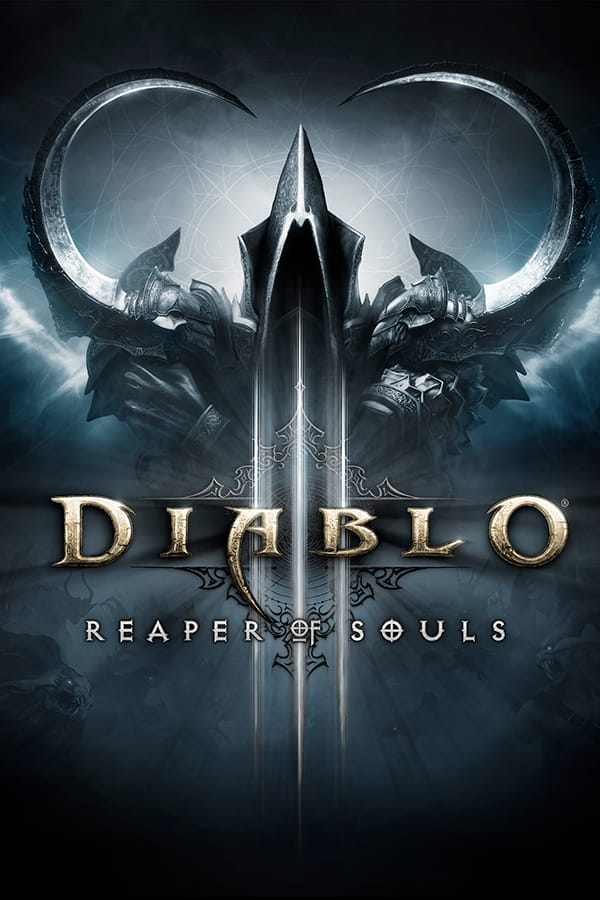
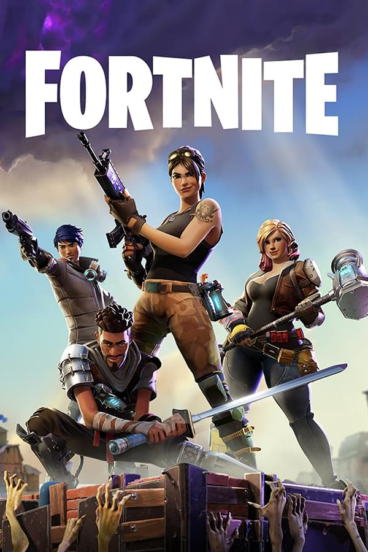
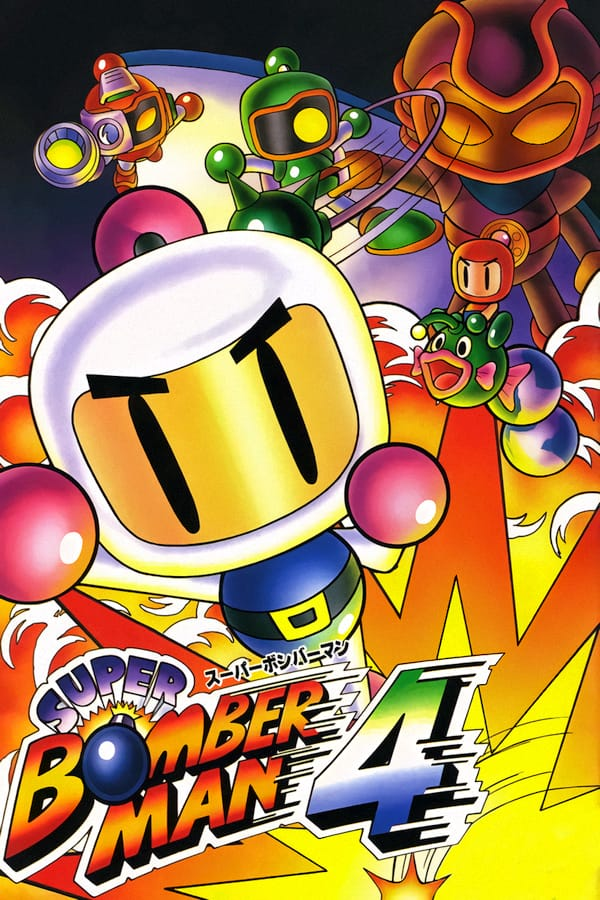

Confira aqui uma lista com os melhores jogos para Nintendo Switch:
THE LEGENDS OF ZELDA: BREATH OF THE WILD
Gênero: Ação e avntura.
Modos de jogo: Um jogador.
Lançamento: março 2017.
Desenvolvedor: Nintendo Entertainment Planning & Development.
Descrição de jogo:
Link tem a missão de resgatar sua princesa, Zelda, e para isso terá de enfrentar várias aventuras e monstros assustadores pela difícil jornada.
SUPER SMASH BROS ULTIMATE
Gênero: Luta.
Modos de jogo: Multijogador/on-line.
Lançamento: Dezembro de 2018.
Desenvolvedor: Sora Ltd., BANDAI NAMCO Studios, Nintendo Entertainment Planning & Development.
Descrição de jogo:
Uma luta épica com universo Super Smash Bros onde só sobrevive o mais forte e mais habilidoso, gráficos e jogabilidades incríveis e epicas.
HADES
Gênero: RPG de ação.
Modos de jogo: Um jogador.
Lançamento: Dezembro 2018.
Desenvolvedor: Supergiant Games.
Descrição de jogo:
Zagreus filho de Hades, sofre pois esta aprisionado em um mundo de tortura e sofrimento e decide fazer de tudo para fugir e ter sua liberdade com a ajuda de todos os olimpianos.
POKEMÓN MYSTERY DUNGEON: RESCUE TEAM DX
Gênero: Roguelike.
Modos de jogo: Um jogador.
Lançamento: março de 2020.
Desenvolvedor: Chunsoft, The Pokémon Company.
Descrição de jogo:
Uma aventura com novos gráficos nova jogabilidade e uma experiencia surreal.
ANIMAL CROSSING NEW HORIZONS
Gênero: simulação social.
Modos de jogo: multijogador/on-line.
Lançamento: Março de 2020.
Desenvolvedor: Nintendo, Nintendo Entertainment Planning & Development.
Descrição de jogo:
Interagir com seus companheiros e conviver com eles é de extrema importância nesse jogo, cada atitude e cada passo deves ser calculado e pensado.
MARIO KART 8 DELUXE
Gênero: corrida.
Modos de jogo: multijogador/on-line.
Lançamento: Abril de 2017.
Desenvolvedor: Nintendo.
Descrição de jogo:
Um duelo de corrida com figuras icônicas gráficos surrealistas e jogabilidade incrível, neste jogo habilidades de agilidade e rapidez serão de extrema importância.
LUIGI'S MANSION 3
Gênero: Ação e aventura.
Modos de jogo: Um jogador.
Lançamento: outubro de 2019.
Desenvolvedor: Next Level Games.
Descrição de jogo:
Luigi terá de encarar seus medos em um hotel enfrentando todo tipo de desafio que está por vir.

DIABLO 3
Gênero: RPG de ação.
Modos de jogo: Um jogador.
Lançamento: Maio de 2012.
Desenvolvedor: Blizzard Entertainment.
Descrição de jogo:
Após 20 anos do mal aprisionado um cometa cai e abre a prisão onde o mal estava escondido, e com a volta do mal uma nova missão.
FINAL FANTASY 7 REMAKE
Gênero: RPG de ação.
Modos de jogo: Um jogador.
Lançamento: Abril de 2020.
Desenvolvedor: Square Enix, Square Enix First Development Division.
Descrição de jogo:
Cloud Strife é um mercenário que aceita trabalhar para o grupo ecoterrorista Avalanche nele ele luta pois uma empresa usa o Mako energia vital do planeta prejudicando o meio ambiente e podendo vir a causar a destruição do planeta.
GRINDSTONE
Gênero: Aventura e quebra-cabeças.
Modos de jogo: multijogador.
Lançamento: setembro de 2019.
Desenvolvedor: Capybara Games.
Descrição de jogo:
É necessário que o jogador conclua todos os desafios psicológicos que lhe será dado para avançar no jogo, e a cada avanço mais difícil e complexo ele vai ficando.

FORTNITE
Gênero: Battle royale.
Modos de jogo: multijogador/online.
Lançamento: Julho de 2017.
Desenvolvedor: Epic Games, People Can Fly.
Descrição de jogo:
Na batalha vale de tudo, e é necessário usar tudo a seu alcance para vencer, para tornar-se o vencedor terá de eliminar o maior número de oponentes possível e chegar vivo até o final da partida.
TOP GEAR
Gênero: Corrida.
Modos de jogo: Multijogador.
Lançamento: Março de 1992.
Desenvolvedor: Kemco, Gremlin Interactive.
Descrição de jogo:
O objetivo é chegar até o final e ganhar todas as fazes superando os inimigos e chegando em primeiro e com o carro intacto.
THE LION KING
Gênero: Ação e aventuras.
Modos de jogo: Um jogador.
Lançamento: 1994.
Desenvolvedor: Virgin Interactive, Westwood Studios, Dark Technologies, Syrox Development.
Descrição de jogo:
Simba terá de ser forte e enfrentar a grande selva, lutar contra família e crescer e tornar-se o rei que nasceu para ser.
Aladdin é um jovem ladrão que encontrou um gênio da lâmpada que lhe deu três desejos e os dedicou para conquistar o amor de sua vida, enfrentando em sua jornada todos os perigos que encontrar.
HERCULE
Gênero: Ação e aventura.
Modos de jogo: Um jogador.
Lançamento: Junho de 1997.
Desenvolvedor: Eurocom, Disney Interactive Studios, Tiertex Design Studios.
Descrição de jogo:
Um jovem rapas descobre ser filho de zeus, e terá de provar seu valor se quiser assumir seu valor e sua posição no olimpo.
A humanidade está em perigo e somente Megaman pode salva-la, ele ira enfrentar o mal, aventuras para salvar o mundo.
FINAL FIGHT
Gênero: Lura.
Modos de jogo: Multijogador.
Lançamento: Dezembro de 1989.
Desenvolvedor: Capcom, Creative Materials.
Descrição de jogo:
Aquele que derrotar o inimigo e terminar a partida com vida será declarado o vencedor.
CONTRA 3
Gênero: Luta.
Modos de jogo:
Lançamento: Fevereiro de 1992.
Desenvolvedor: Factor 5, Konami.
Descrição de jogo:
O objetivo é avançar nas fases, ir derrotando todos e quaisquer inimigos que aparecerem apara avançar no jogo, sua jogabilidade é inigualável e sua dinâmica incrível.

SUPER BOMBERMAN
Gênero: Ação e estratégia.
Modos de jogo: Multijogador.
Lançamento: Abril de 1993.
Desenvolvedor: Hudson Soft.
Descrição de jogo:
Um jogo dinâmico onde o principal e único objetivo é sobreviver e derrotar seus adversários.
SUPER CASTLEVANIA 4
Gênero: Ação e aventura.
Modos de jogo: Um jogador.
Lançamento: Outubro de 1991.
Desenvolvedor: Konami.
Descrição de jogo:
Dracula mais uma vez ameaça a soltar sua ira na humanidade e apenas os Belmont podem impedi-lo, então é traçada uma épica batalha contra o mal e apenas um sairá vitorioso.